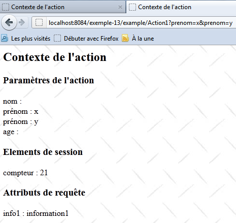

16. Beispiel 13 – Der Kontext einer Aktion
Diese Anwendung soll veranschaulichen, dass eine Aktion Zugriff auf Folgendes hat:
- Anfrageparameter
- Anfrageattribute
- auf die Attribute der Benutzersitzung

16.1. Das NetBeans-Projekt
 |
Das NetBeans-Projekt sieht wie folgt aus:
- in [1], die Ansicht [Context.jsp]
- in [2] die Aktion [Action1.java] und die Struts-Konfigurationsdatei [example.xml]
16.2. Konfiguration
Die Projektkonfiguration ist in [example.xml] definiert:
<?xml version="1.0" encoding="UTF-8" ?>
<!DOCTYPE struts PUBLIC
"-//Apache Software Foundation//DTD Struts Configuration 2.0//EN"
"http://struts.apache.org/dtds/struts-2.0.dtd">
<struts>
<package name="example" namespace="/example" extends="struts-default">
<action name="Action1" class="example.Action1">
<result name="success">/example/Context.jsp</result>
</action>
</package>
</struts>
- Zeile 8: Die Anfrage für die URL [/example/Action1] löst die Instanziierung der Klasse [example.Action] aus. Da keine Methode angegeben ist, wird die Methode „execute“ ausgeführt.
- Zeile 9: Es wird nur ein Schlüssel akzeptiert. Der Schlüssel „success“ bewirkt, dass die Ansicht [Context.jsp] angezeigt wird.
Die vereinfachte Architektur zur Verarbeitung einer Anfrage sieht wie folgt aus:
 |
Die Anfrage wird von zwei Komponenten der Webanwendung verarbeitet: der Aktion [Action1] [1] und der Ansicht [Context.jsp] [2]. Diese beiden Komponenten haben Zugriff auf unterschiedliche Datentypen:
- Daten im Anwendungsbereich [3], d. h. Daten, auf die alle Anfragen aller Benutzer zugreifen können. Diese sind fast immer schreibgeschützt. Diese Daten enthalten oft die Anfangskonfiguration der Anwendung. Hier haben [Action1] und [Context.jsp] Zugriff auf diese Daten.
- Daten im Sitzungsbereich [4], d. h. Daten, auf die alle Anfragen desselben Benutzers zugreifen können. Diese Daten sind schreib- und lesbar. Hier nutzt [Action1] die Sitzung im Lese-/Schreibmodus, während [Context.jsp] sie im schreibgeschützten Modus nutzt.
- Daten im Request-Bereich [5], auf die alle Elemente zugreifen können, die die Anfrage verarbeiten. Hier speichert [Action1] Daten in diesem Speicher, und [Context.jsp] ruft sie ab. Daten im Request-Bereich ermöglichen es Element N, Informationen an Element N+1 weiterzugeben.
- Vom Client gesendete Anfrageparameter [6]. Sie werden von den Komponenten, die die Anfrage verarbeiten, im schreibgeschützten Modus verwendet.
16.3. Die Aktion [Action1]
Der Code für die Klasse [Action1] lautet wie folgt:
package example;
import com.opensymphony.xwork2.ActionSupport;
import java.util.Map;
import java.util.Set;
import org.apache.struts2.interceptor.ParameterAware;
import org.apache.struts2.interceptor.RequestAware;
import org.apache.struts2.interceptor.SessionAware;
public class Action1 extends ActionSupport implements SessionAware, RequestAware, ParameterAware {
// constructor without parameters
public Action1() {
}
// Session, Request, Parametres
Map<String, Object> session;
Map<String, Object> request;
Map<String, String[]> parameters;
@Override
public String execute() {
// parameter list
System.out.println("Paramètres...");
Set<String> clés = parameters.keySet();
for (String clé : clés) {
for (String valeur : parameters.get(clé)) {
System.out.println(String.format("[%s,%s]", clé, valeur));
}
}
// session
System.out.println("Session...");
if (session.get("compteur") == null) {
session.put("compteur", new Integer(0));
}
Integer compteur = (Integer) session.get("compteur");
compteur = compteur + 1;
session.put("compteur", compteur);
System.out.println(String.format("compteur=%s", compteur));
// request
request.put("info1", "information1");
// display page JSP
return SUCCESS;
}
// session
public void setSession(Map<String, Object> session) {
this.session = session;
}
// request
public void setRequest(Map<String, Object> request) {
this.request = request;
}
// settings
public void setParameters(Map<String, String[]> parameters) {
this.parameters = parameters;
}
}
- Zeile 10: Die Klasse implementiert die folgenden Schnittstellen
- SessionAware: für den Zugriff auf das Wörterbuch der Sitzungsattribute (Zeile 16). Diese Schnittstelle hat nur eine Methode, nämlich die in Zeile 46.
- RequestAware: für den Zugriff auf das Verzeichnis der Anforderungsattribute (Zeile 17). Diese Schnittstelle hat nur eine Methode, nämlich die in Zeile 51.
- ParameterAware: für den Zugriff auf das Verzeichnis der Anforderungsparameter (Zeile 18). Beachten Sie, dass jeder Schlüssel (der Parametername) einem Array von Werten entspricht. Dies ist notwendig, um Eingabefelder zu verarbeiten, die mehrere Werte übermitteln, wie z. B. eine Mehrfachauswahlliste. Die ParameterAware-Schnittstelle hat nur eine Methode, nämlich die in Zeile 56.
- Zeile 21: die Methode `execute`, die ausgeführt wird, wenn die Aktion [Action1] angefordert wird. Zu diesem Zeitpunkt haben die Interceptors ihre Arbeit bereits erledigt:
- Die Methode „setParameters“ (Zeile 56) wurde aufgerufen, und das Parameter-Dictionary in Zeile 18 enthält alle Anfrageparameter.
- Die Methode „setSession“ (Zeile 46) wurde aufgerufen, und das Session-Wörterbuch in Zeile 16 enthält alle Session-Attribute.
- Die Methode `setRequest` (Zeile 51) wurde aufgerufen, und das Request-Dictionary in Zeile 17 enthält alle Request-Attribute.
- Zeilen 31–38: Der mit dem Schlüssel `compteur` verknüpfte Wert wird in die Sitzung geschrieben
- Zeilen 32–34: Der Schlüssel `compteur` wird in der Sitzung gesucht. Wird er nicht gefunden, wird er mit dem ganzzahligen Wert 0 hinzugefügt.
- Zeilen 35–37: Der Schlüssel `counter` wird in der Sitzung gesucht, sein Wert wird erhöht und anschließend wird der Schlüssel wieder in die Sitzung geschrieben.
- Zeile 38: Der mit dem Schlüssel „counter“ verknüpfte Wert wird angezeigt. Da die Inkrementierung bei jeder Anfrage an die Aktion [Action1] erfolgt, sollte der Wert des Zählers mit jeder Anfrage steigen.
- Zeile 40: Ein Attribut mit dem Schlüssel `info1` und dem Wert `information1` wird in das Verzeichnis der Anforderungsattribute eingefügt. Anforderungsattribute unterscheiden sich von Anforderungsparametern. Parameter werden vom Client der Webanwendung gesendet. Anforderungsattribute hingegen ermöglichen die Kommunikation zwischen den verschiedenen Komponenten der Webanwendung, die die Anforderung verarbeiten. Nach der Ausführung von [Action1] wird daher die Ansicht [Context.jsp] angezeigt. Wir werden sehen, dass sie in der Lage ist, die Anforderungsattribute abzurufen.
- Zeile 42: Die Methode `execute` gibt den Schlüssel „success“ zurück.
16.4. Die Meldungsdatei
Die Datei [messages.properties] sieht wie folgt aus:
Context.titre=Contexte de l''action
Context.message=Contexte de l''action
Context.parameters=Param\u00E8tres de l''action
Context.session=Elements de session
Context.request=Attributs de requ\u00EAte
16.5. Die Ansicht [Context.jsp]
Die Ansicht [Context.jsp] ist verantwortlich für die Anzeige:
- bestimmte Anfrageparameter
- den Wert des Schlüssel „counter“ in der Sitzung
- den Wert des Schlüssels „info1“ in der Anfrage
Der Code lautet wie folgt:
<%@ page contentType="text/html; charset=UTF-8" pageEncoding="UTF-8"%>
<%@ taglib prefix="s" uri="/struts-tags" %>
<html>
<head>
<title><s:text name="Context.titre"/></title>
<s:head/>
</head>
<body background="<s:url value="/ressources/standard.jpg"/>">
<h2><s:text name="Context.message"/></h2>
<h3><s:text name="Context.parameters"/></h3>
<s:iterator value="#parameters['nom']" var="nom">
nom : <s:property value="nom"/><br/>
</s:iterator>
<s:iterator value="#parameters['prenom']" var="prenom">
prenom : <s:property value="prenom"/><br/>
</s:iterator>
<s:iterator value="#parameters['age']" var="age">
âge : <s:property value="age"/><br/>
</s:iterator>
<h3><s:text name="Context.session"/></h3>
compteur : <s:property value="#session['compteur']"/>
<h3><s:text name="Context.request"/></h3>
info1 : <s:property value="#request['info1']"/>
</body>
</html>
- Zeilen 12–14: Alle Werte anzeigen, die mit dem Parameter „name“ verknüpft sind
- Zeilen 15–17: Zeigt alle Werte an, die mit dem Parameter „first_name“ verknüpft sind
- Zeilen 18–20: Zeigt alle Werte an, die mit dem Parameter „age“ verknüpft sind
- Zeile 22: Zeigt den Wert an, der mit dem Schlüssel „counter“ in der Sitzung verknüpft ist
- Zeile 24: Zeigt den Wert an, der mit dem Schlüssel „info1“ in der Abfrage verknüpft ist
16.6. Die Tests
 |
- In [1] wird Action1 ohne Parameter aufgerufen
- in [2] hat [Context.jsp] keine Parameter gefunden
- In [3] hat [Context.jsp] den Schlüssel „counter“ in der Sitzung gefunden
- in [4] hat [Context.jsp] den Schlüssel „info1“ in der Anfrage gefunden
Führen wir einen weiteren Test durch:
 |
- In [1] wird Action1 mit Parametern angefordert
- In [2] zeigt [Context.jsp] diese Parameter an
- In [3] fand [Context.jsp] den Schlüssel „compteur“ in der Sitzung. Der Zähler wurde tatsächlich um 1 erhöht, was zeigt, dass die Daten zwischen den beiden Anfragen erfolgreich beibehalten wurden.
- In [4] hat [Context.jsp] den Schlüssel „info1“ in der Anfrage gefunden
Erinnern Sie sich daran, dass die Methode [Action1.execute] in die Webserver-Konsole geschrieben hat. Hier ist ein Beispiel:
16.7. Fazit
Beachten Sie bitte folgende Punkte:
- Um Informationen zu speichern, die für alle Anfragen aller Benutzer gemeinsam genutzt werden sollen, verwenden wir den Speicher der Anwendung. Wir werden gleich ein Beispiel dafür zeigen.
- Um Informationen zu speichern, die von allen Anfragen desselben Benutzers gemeinsam genutzt werden sollen, verwenden wir die Sitzung dieses Benutzers.
- Um Informationen zu speichern, die von allen Komponenten gemeinsam genutzt werden, die eine Anfrage bearbeiten, verwenden wir den Anfragebereich.